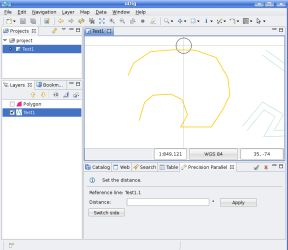

LineString paralelo bat sortzen du.
LineString paralelo bat sortzen du. LineString paralelo bat sortzen du.
Paralelo tresnak erreferentzi lerro bat aukeratuz eta distantzia ezarriz jarduten du, orduan lerro paralelo bat marraztuko du. Distantzia mapan klik bat egitean ezarriko da. Ondoren, puntu honen eta erreferentzi lerroaren segmentu hubilenaren arteko distantzia kalkulatuko du.
Paralelo tresna aukeratu hedatze zerrendatik 1 irudian agertzen den bezala.

1 irudia. Paralelo tresna aukeratuz.
Erreferentzi featurea aukeratu.

2 irudia. Erreferentzi featurea aukeratuz.
Erreferentzi featurea aukeratu ondoren, distantzia ezarri segmentuaren alboan klik eginez. Hau egitean, tresnak segmentu hurbilena aurkitzen du eta distantzia kalkulatzen du, horrez gain lerro paraleloa erreferentzi featurearen barruan edo kanpoan badago. Hau eta gero, paraleloa 3 irudian agertzen den bezala marraztuko da.

3 irudia. Distantzia ezartzen eta lerro paraleloa marrazten.
Lerro paraleloa marraztua izan denean, erabiltzaileak erreferentzi featurearen eta lerro paraleloaren arteko distantzia aldatu dezake. Hau egiteko, distantzia berria ezarri behar da testu karratuan eta Aplikatu botoian klik egin.

4 irudia. Distantzia aldatu.
Erabiltzaileak lerro paraleloaren kokaera aldatu nahi badu (erreferentzi featurearen barrua edo kanpoa) Aldez aldatu botoian klik egin behar du.

5 irudia. Aldez aldatu.
Erabiltzaileak lerro paraleloa ezartzen amaitzen duenean eta geruzara gehitu nahi duenean, mapan klik bikoitza eginez egin dezake edo Bistako tresnen barran dagoen Onartu botoian klik eginez. Gainera aldaketak desegin nahi badituzu eta beste erreferentzi feature batekin berriz hasi, Onartu botoiaren alboan dagoen Ezeztatu botoian klik egin dezakezu.

6 irudia. Lerro paraleloa geruzara gehitu.
{kind=link}